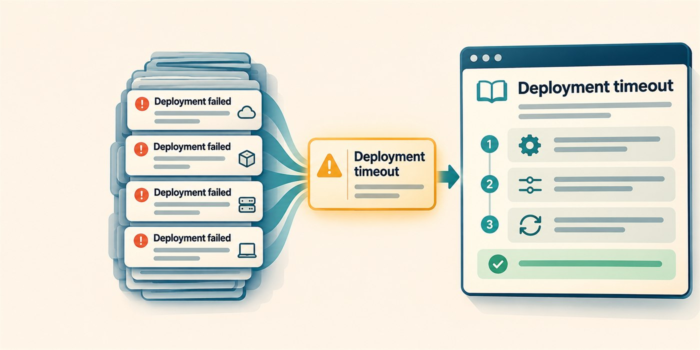

07 — AI PRODUCT CASE STUDY
Error Intelligence Platform
Built a platform that groups recurring cloud errors and turns eligible patterns into troubleshooting content. It also makes error patterns searchable so customers and support teams can investigate failures across resources they can access.

THE CONTEXT
It All Started When...
Different resource identifiers made the same failure look like thousands of different errors. Teams struggled to see which patterns were common, and manually writing troubleshooting articles could not keep pace. Raw error messages also contained sensitive data, which limited where they could be reused.
PRODUCT OWNERSHIP
Harpreet's Role
- PRD & quality specs: Defined article acceptance, redaction requirements, and coverage priorities for recurring cloud errors.
- Cross-functional collaboration & stakeholder management: Aligned support, content, engineering, and platform teams on pilot scope and integrations.
- Kanban board & backlog prioritization: Prioritized coverage gaps, streaming and batch detection, and reporting needs.
- Retrospective & iteration planning: Used article-quality and pipeline-health signals to plan content and platform improvements.
WHAT CHANGED
Results
- Built a pipeline that turns raw cloud errors into reusable patterns. Eligible patterns can trigger AI-written troubleshooting articles, which publish only after passing a quality check.
- Made error patterns available in existing query and troubleshooting tools. A diagnostic capability connects resource failures with affected dependencies and recent changes.
- Defined reporting for article coverage, content quality, and pipeline health, so teams can identify errors that still lack useful guidance.
ILLUSTRATIVE OUTCOMES
Measurement example
- 40% → 55%eligible error codes with troubleshooting articles: 480 to 660 of 1,200, including 220 new patterns.
- 2.4M → 6,000/dayraw error events consolidated into pattern records, a 400:1 ratio.
EXPLORE THE FULL PROJECT
Want the complete case study?
Email me for the complete case study and program materials.
Email for the complete case study